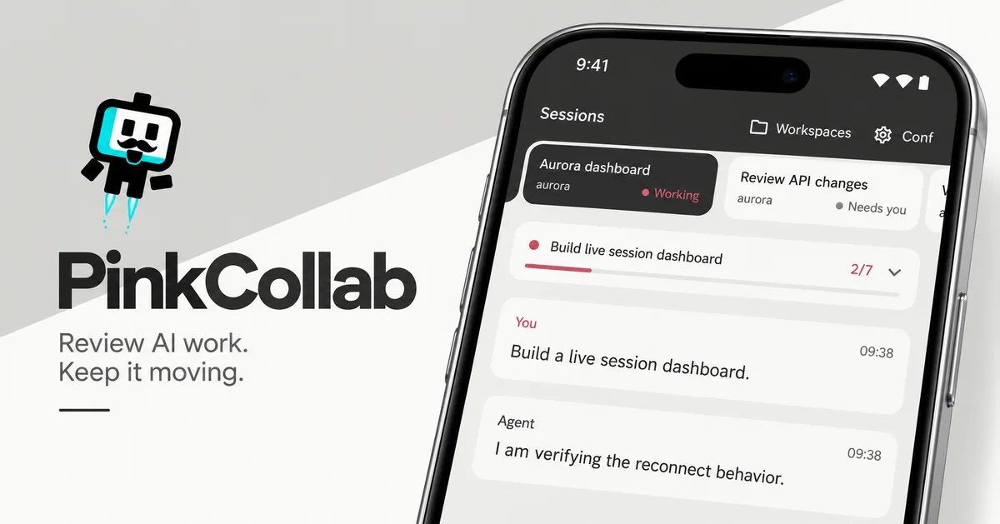
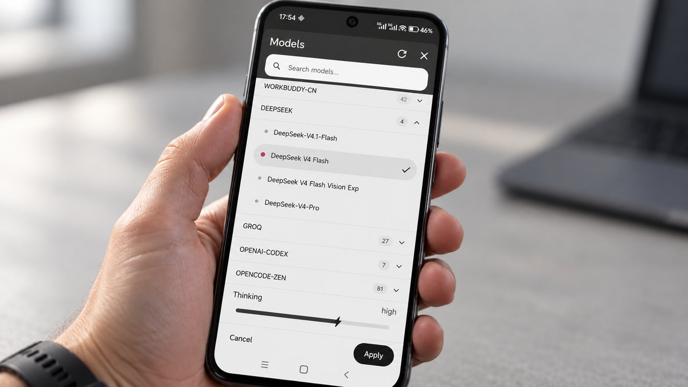
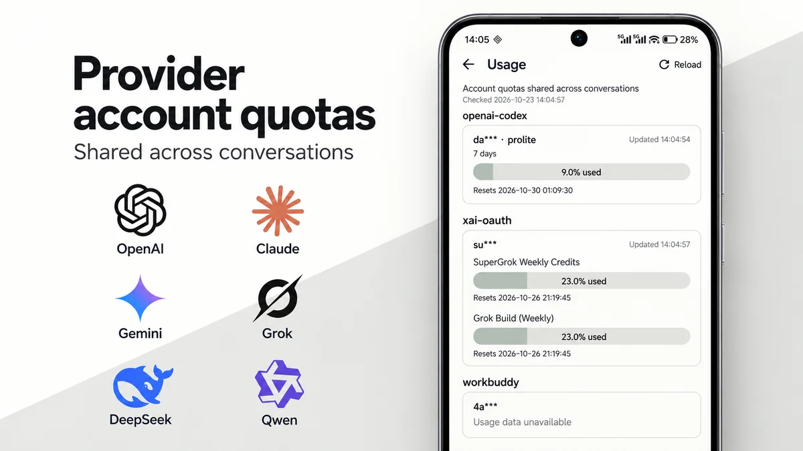

Android app
Start, follow, answer
ANDROID CLIENT FOR OH MY PI
Step away. Stay in the loop. Start and continue Oh My Pi (OMP) sessions from your phone, on the computer you already use.

Open a project on your host.
Give OMP its next task.
Read live replies and tool activity.
Swipe between your sessions.
Answer a question. Add a file.
Steer the next step from your phone.
A LITTLE DISTANCE. FULL CONTROL.
Your conversations and tools,
with room to move.
MODELS & THINKING
Choose your model and its supported thinking level from your phone. Search models across providers and apply the settings to your session.

PROVIDER USAGE
Open Usage from Models to check the provider accounts on your host: reported usage, quota windows, and reset times. These quotas are shared across conversations. Checking them keeps your pending model settings and does not start a session.

usage --json; unavailable data is not treated as zero usage.WHY PINKCOLLAB
OMP’s /collab shares a running terminal session. PinkCollab starts and manages your sessions from Android, with model and thinking controls and provider account quotas in the same app.
/collab shares a session that is already running on a terminal you opened. PinkCollab creates the session itself. OMP starts there when you send the first prompt or open the model picker, so a new task can begin without a keyboard in front of the host.
A Collab room follows one process and ends when it does. PinkCollab keeps the session in your list after OMP exits, reloads its transcript, and starts a new runtime on the same conversation later.
A /collab guest cannot upload a file. Attach files from your phone with PinkCollab to give OMP the context for the next step.
/collab reaches guests through OMP's hosted relay, and its production relay is not distributed for self-hosting. Apart from the GitHub release check and APK download, PinkCollab talks only to the Gateway you run: Tailscale Funnel, private Serve, or your own HTTPS proxy.
A /collab link opens one session. PinkCollab keeps every session in one pager: swipe to read the next one and steer it, while the others keep running.
PinkCollab does not mirror the TUI, and OMP stays in control of tools, files, and credentials. Use /collab when you want a colleague inside your terminal session; use PinkCollab to run your own sessions from your phone.
FROM A TAP TO A RUNNING AGENT
PinkCollab connects your phone to OMP on your host through the Gateway.
Start, follow, answer
Auth, sessions, streaming
Plans, tools, coding
Your chosen models
omp --mode rpc-ui process.02 · ControlCommands go in; structured events stream back to Android.03 · OwnWorkspace files and session records live on your host; OMP sends model requests to your provider.Your machines stay yours. OMP runs on your hosts. Model provider credentials are configured there, not on the phone; OMP may send them to your provider when making model requests. Pair devices with a single-use QR code and revoke access when you need to.
Deployment guideTHE AGENT BEHIND THE APP
Oh My Pi (OMP) is a coding agent that works in your terminal. It reads your project, edits files, and runs commands to check its work. PinkCollab connects you to that agent from your phone.
The coding capabilities come from OMP, with a native Rust core and tools for planning, code intelligence, and debugging.
Explore OMP docsLET’S GET YOU CONNECTED
Your computer runs the sessions. Your phone keeps you connected. Prepare these three things on your computer, then follow the four steps.
omp --version works in your terminal.Keep your computer awake and online while using PinkCollab. After pairing, you can close the terminal — the Gateway runs in the background.
Open the downloaded APK. Allow installation from your browser if Android asks. Keep the app and Gateway on the same release.
npm install -g pinkcollab@latest
pinkcollab --versionRun as the same user who configured OMP. The version command confirms the install.
Open a terminal in the folder containing your projects, then run:
pinkcollab setupConfirm the workspace folder, sign in to Tailscale if prompted, and follow the Funnel approval link. Setup starts the Gateway and displays a QR code.
Open PinkCollab and scan the QR code within five minutes. Go to Workspaces, choose a folder, and create your first session.
Code expired? Run pinkcollab pair on your computer for a new one.
git clone https://github.com/3xian/PinkCollab.git
cd PinkCollab/gateway
cargo build --release --locked --bin pinkcollab-gatewayRun ./target/release/pinkcollab-gateway from gateway/ instead of pinkcollab, and build the matching Android app. See the development guide.
Good work travels.
Take yours with you.